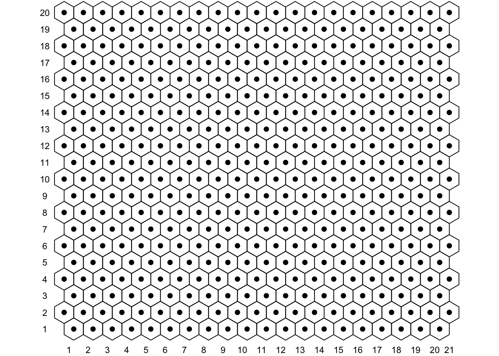
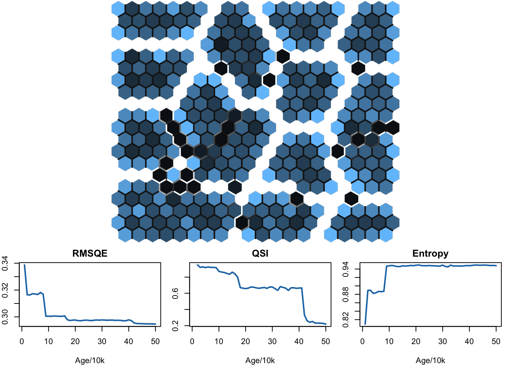
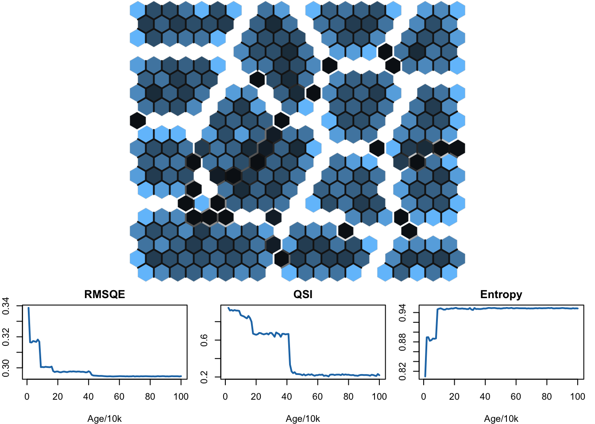
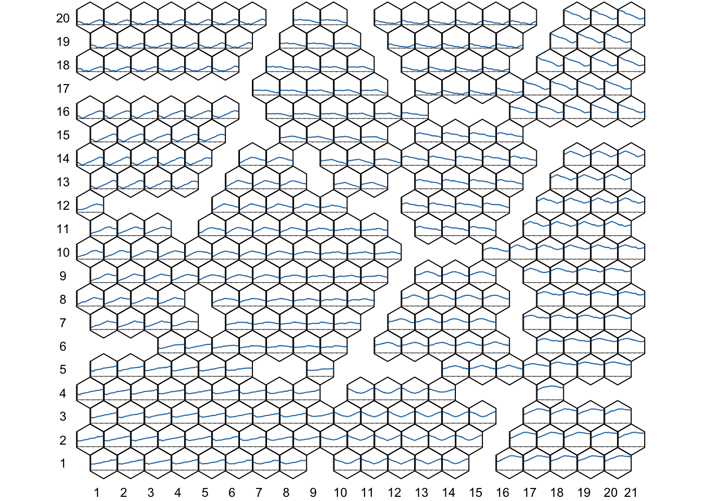
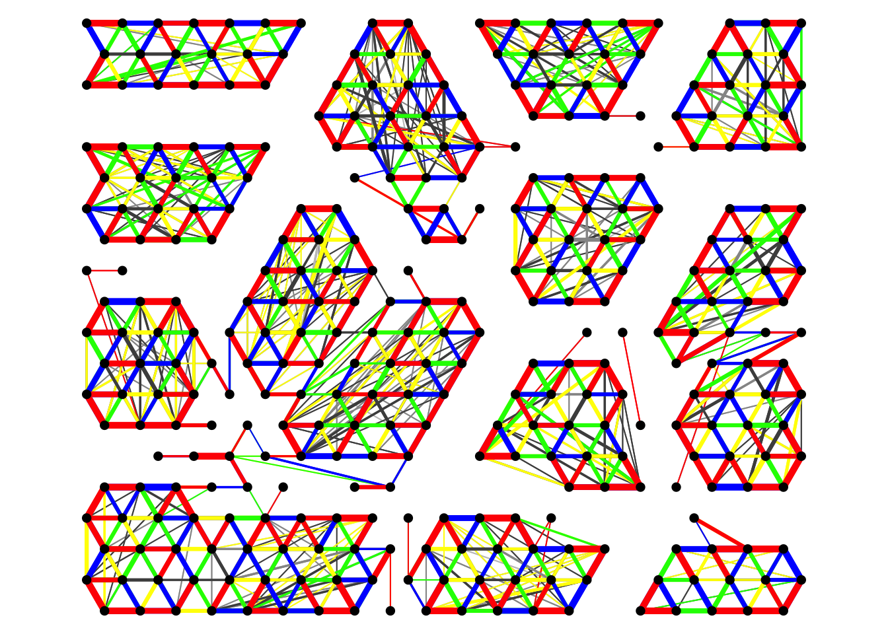
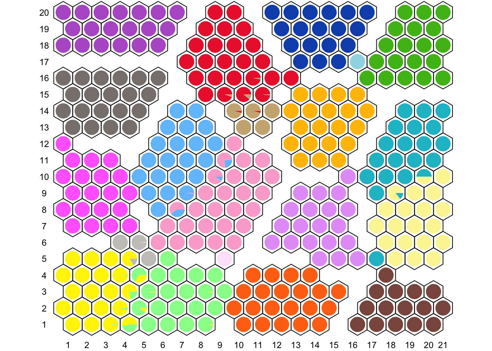
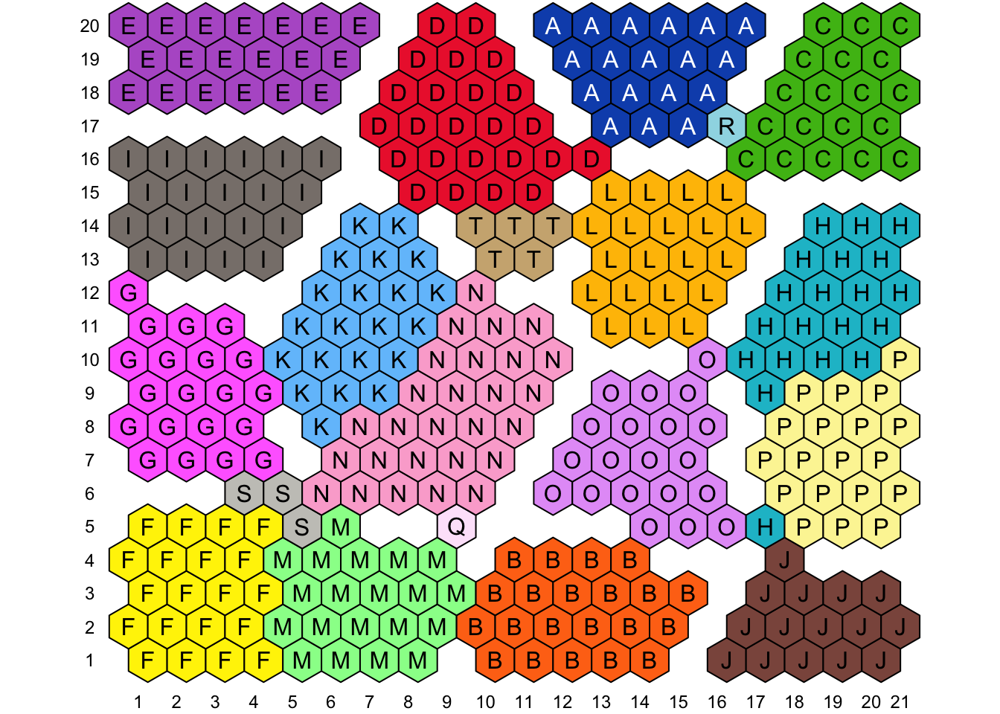

Chapter 6 A Complete Example with Visualizations
In this section we exercise a typical standard use of SOMDisco and demonstrate how the supporting SOM visualization functions can be used to aid inference and cluster extraction from a trained SOM. The SOM is unique among vector quantizers in that it possesses a predefined output topology (typically 2-d, as is our setting) which can be harnessed to compactly express the information learned by an SOM for easy inspection.
For speed, all custom SOM visualizations are predicated on R’s base::plot functionality (vs., e.g., ggplot). Each of the visualization functions demonstrated in this section are intended to work together (via plot layering) to allow simultaneous representation of multiple learned SOM quantities. Many customization options exist for the visualization functions; their individual help menus explain this optionality.
To begin, we will setup a new SOM object for SHGR training:
# Initialize a 20x20 SOM with hexagonal lattice
mysom = SOM$new()
mysom$initialize_SOM(SHGR$X, 20, 20, "hex")
## Setting lattice quantities
## ++ calculating lattice (x,y) coordinates ... done
## ++ calculating neuron lattice adjacencies ... done
## ++ calculating geodesic lattice distances between neurons ... done
## ++ assigning geodesic lattice distances to distlist ... done
## ++ calculating lattice tile vertices ... done
## ----------------------------------------------------------------
## Setting training data
## ----------------------------------------------------------------
## Setting network ranges
## ++ external = [-115.19, 1347.57]
## ++ internal = [0.00, 1.00]
## ++ change defaults via $set_netrng
## ----------------------------------------------------------------
## Initializing prototypes to random uniform
## ++ to set a particular random seed call set.seed() and then $set_W_runif()
## ++ to set to specific values call $set_W()
## ----------------------------------------------------------------
## Initializing prototype win frequencies to equiprobable
## ++ to set to specific values call $set_p(values)
## ----------------------------------------------------------------
## Setting default learning rates
## Storing the annealing schedule as:
## t alpha beta gamma sigma
## 16384 0.50 0.05 0.01 3
## 81920 0.25 0.03 0.00 2
## 163840 0.10 0.01 0.00 1
## 409600 0.05 0.01 0.00 1
## 1638400 0.01 0.00 0.00 1
## ++ change via $get_LRAS and $set_LRAS
## ----------------------------------------------------------------
# For reproducibility, re-initialize the prototypes with a given seed
set.seed(123)
mysom$set_W_runif()The lattice can be immediately visualized after initialization.
# Setup an SOM plot window
vis_som_setup(SOM=mysom, lattice_coords = T)
# Add the lattice tiles as polygons
vis_som_tiles(SOM=mysom, add=T)
# Add the neurons as points
vis_som_neurons(SOM = mysom, add = T)
The SOM visualizations are intended to be setup via a call to vis_som_setup then further augmented: in this case with the lattice tiles (whose shape is dependent upon lattice_type: squares for “grid” types, and hexagons for “hex” types) and neurons. Most visualization functions have an add argument, which if set to FALSE will call vis_som_setup internally (thus bypassing the need to explicitly layer the functions with individual calls).
We set the SOM to monitor every 10,000 steps and train for 500,000 steps:
mysom$set_monitoring_freq(10000)
mysom$train_SOM(500000, SHGR$X)
## SOM Training:
## ++ Reporting every 10000, monitoring every 10000steps
## 1 2 3 4 5 6 7 8
## 9 10 11 12 13 14 15 16
## 17 18 19 20 21 22 23 24
## 25 26 27 28 29 30 31 32
## 33 34 35 36 37 38 39 40
## 41 42 43 44 45 46 47 48
## 49 50
## End Training (current age = 500000)
## ----------------------------------------------------------------
## SOM Recall:
## ++ finding BMUs of data ... done
## ++ building CADJ matrix ... done
## ++ setting RF_size ... done
## ++ calculating SOM Entropy ... done
## ++ populating RF_members ... done
## ++ setting lattice fences ... doneIf monitoring is activated, the quantities discussed in Section WHERE? can be visualized after training:

The top panel displays a heatmap of the RF_size of each prototype’s Receptive Field. White tiles correspond to empty Receptive Fields, black to low and light blue to high RF_size; combined, this is the mU-Matrix visualization of [6] Clusters in these data are readily visible, separated by areas of “dead” neurons, which do not represent any training data. The lower panel plots the RMSQE, QSI and Entropy (recorded every 10k training steps) vs training age. While RMSQE and Entropy have been somewhat stable over most of the current age of the SOM QSI has not, indicating further training may be beneficial. We continue training another 500k steps and re-create the monitoring visualization:
# Train another 500k steps and view the resulting age
mysom$train_SOM(500000, SHGR$X)
## SOM Training:
## ++ Reporting every 10000, monitoring every 10000steps
## 1 2 3 4 5 6 7 8
## 9 10 11 12 13 14 15 16
## 17 18 19 20 21 22 23 24
## 25 26 27 28 29 30 31 32
## 33 34 35 36 37 38 39 40
## 41 42 43 44 45 46 47 48
## 49 50
## End Training (current age = 1000000)
## ----------------------------------------------------------------
## SOM Recall:
## ++ finding BMUs of data ... done
## ++ building CADJ matrix ... done
## ++ setting RF_size ... done
## ++ calculating SOM Entropy ... done
## ++ populating RF_members ... done
## ++ setting lattice fences ... done
mysom$age
## [1] 1e+06
# Visualize Training
vis_som_training(SOM = mysom, vis.SOM = T, vis.mtr = T) After training we can assess the organization of the lattice by plotting the 100-d SOM prototype vectors in their respective lattice tiles:
# Setup the lattice tiles
vis_som_setup(SOM = mysom, lattice_coords = T)
vis_som_tiles(SOM = mysom, add = T)
# Add the prototype vectors in lattice situ
vis_som_prototypes(SOM=mysom, add=T) Clusters of similar prototype shapes are readily apparent, confirming the organization of this SOM.
We can explore these apparent clusters with the CONNvis visualization which requires the TopoRNet package to be installed as well. Using the CONN matrix just learned we define a TRN object and compute the CONNvis statistics
mytrn = TRN$new()
mytrn$set_input_topo(mysom$W, mysom$CONN())
## Setting Input Space Topos
## ++ storing vertices ... done
## ++ storing edge list ... done
mytrn$set_output_topo(mysom$nu_xy, mysom$nu_ADJ)
## Setting Output Space Topos
## ++ storing vertices ... done
## ++ storing edge list ... done
## ++ computing folding lengths of forward network mapping ... done
## ++ computing folding lengths of backward network mapping ...
## Warning in mytrn$set_output_topo(mysom$nu_xy, mysom$nu_ADJ): NAs introduced by
## coercion to integer range
## done
## ++ computing topology preserving radius ... done
mytrn$set_CONNvis()
## CONNvis parameterization:++ computing local ranks ... done
## ++ computing local rank stats ... done
## ++ computing global ranks ... done
## ++ computing global rank stats ... done
## ++ computing output topology length stats ... donewhich are passed, along with our trained SOM, to the function vis_som_CONNvis:

CONNvis ranks each CONN edge by local and global topological importance, indicated by color (red, blue, green, yellow, grayscale) and line width. As recognized above, many clusters are readily apparent on the SOM with the mU-Matrix visualization alone. CONNvis has further revealed evidence of separation of large clusters in the middle-left and middel-right of the SOM.
Since these training data are labeled we can project the data labels through the learned SOM mapping to expand the CONNvis findings.
Visualizations involving labels require an additional data frame known as a color table or ctab to function which controls the coloring of each character label found in the dataset. The ctab should be a data frame with columns label (listing the distinct character labels) and color giving a hex color code (or R color name) corresponding to each label. The SHGR data is packaged with the following color table:
head(SHGR$ctab)
## label color
## 1 A #0F52BA
## 2 B #FF7417
## 3 C #4CBB17
## 4 D #ED2939
## 5 E #B660CD
## 6 F #FFF200which can be visualized via

With a color table set, the label distribution in each prototype’s Receptive Field can be visualized on the lattice as a proportional pie chart in each lattice tile:
# Setup the lattice tiles
vis_som_setup(SOM = mysom, lattice_coords = T)
vis_som_tiles(SOM = mysom, add = T)
# View the mapped label distribution
vis_som_labeldist(SOM=mysom, ctab=SHGR$ctab, add=T) The neighborhoods on the SOM appear to be meaningful, with the majority of prototype Receptive Fields containing data of the same label. There is some visible mixing of labels in the RFs of “boundary prototypes” which sit between neighboring clusters, which is to be expected for data of any complexity. Often, an analyst may only care about the plurality winning label within each Receptive Field, which can be viewed by “painting” the SOM tiles with their corresponding label color, and annotating each tile with its label:
# Setup the lattice tiles, colored by prototype label
vis_som_setup(SOM = mysom, lattice_coords = T)
vis_som_label(SOM = mysom, ctab = SHGR$ctab, add = T)
# Annotate the tiles with the label
vis_som_annotate(SOM = mysom, add = T, text = mysom$RF_label) The propagated labels display roughly the same prototype clustering as suggested by the CONNvis above, confirming both our suggested clustering and the quality of the SHGR labeling.
References
[6] E. Merényi, A. Jain, and T. Villmann, “Explicit magnification control of self-organizing maps for ‘forbidden’ data,” IEEE Transactions on Neural Networks, vol. 18, no. 3, pp. 786–797, 2007.